Corrugated Filter Design Workshop
Design Manual
Draft Document by R. Goulouev
Contents
1. Spurious Pass-Bands of Corrugated Filter
2. Synthesis of Initial Dimensions
3. Corrugated Filter Simulator
8. Accuracy
9. Input/Output and Data Management
Spurious Pass-Bands of Corrugated Filter
As
corrugated filters are based on two-dimensional structure, the frequency
response of any waveguide mode propagating in E-plane structure is of same
first index is a function of only b (propagation number). Therefore frequency
responses of TEN0-mode show similarity to the frequency response of
the dominant TE10-mode including its stop-bands as well as its
pass-bands. Generally existence of the pass-bands of high order modes does not
necessary mean the filter cannot reject the frequency spectrum corresponding to
those spurious pass-bands. Actual filter performance depends on what kinds of
modes are carrying the spectrum. For example, measured between two
waveguide-to-coaxial transitions, the filter may demonstrate solid rejection up
to second harmonic and even higher because the spurious modes are not excited
by setup components (See Fig 1). However, the "bad" modes might be
excited in the real system where the corrugated is intended to be used (see Fig
2).

Figure 1: Transmission response measured using “regular” (symmetric) calibration. TE20-mode level is low because measurement components and filter are symmetric. TE30-mode level is higher because it is excited by transformer steps of filter.
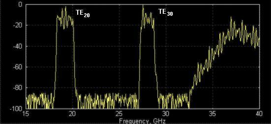
Figure 2: Transmission response measured using “exciters” of higher order modes (regular setup components do not excite them much). The both TE20- and TE30-modes popped up, because not rejected by filter.
As the modes composition of the macro system is unknown, it is better to assume the worst case of existence of all the bad modes. Generally there is no way eliminate the spurious pass-bands for a corrugated filter except moving them out of the important frequency bands. The positions of pass-bands of spurious modes depend on pass-band of the dominant mode and the width of corrugated waveguide. Therefore it is a good idea to locate bands with potential lack of rejection in respect to rejection requirements. The picture shown on Fig 3 tells how to predict pass-bands of spurious modes using the first design step page.
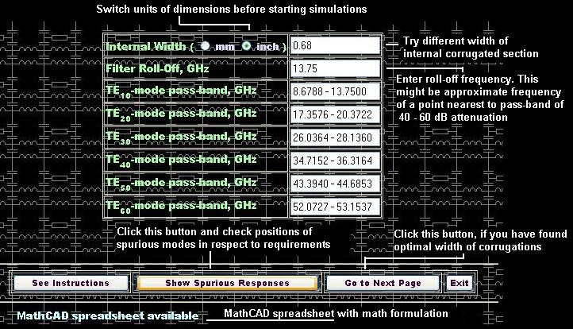
Figure 3: Example of selection width of corrugated waveguide and cut-off point.
Synthesis of Initial Dimensions
If the “spurious” width is determined, other dimensions of corrugated filter can be obtained by following simple procedure. The design procedure presented here differs from conventional design procedures based on direct synthesis of filter dimensions using equivalent circuit networks and special functions or polynomials. The conventional procedures are found to be practically ineffective because they make accent on pass-band performance rather than higher stop-band where the prototype networks do not model electromagnetic propagation in waveguide structures. Therefore the design procedure used here is based on selection of prototypes of good upper stop-band rejection and bad pass-band performance and further optimization of pass-band. There are two types of prototypes used here. Prototype [option 1] is preferable if end frequency point of upper stop-band is less than 2.5-3 times central frequency of the filter pass-band. The option #1 provides better initial pass-band performance and therefore is easier to design. The prototype [option 2] is preferable to reject frequency spectrum up to 3-4 times of central frequency of the pass-band. Since you have entered roll-off and width of corrugations in the first design page, the synthesizer will try to find optimal values for Bmin and Bmax values, the network parameters of prototype.
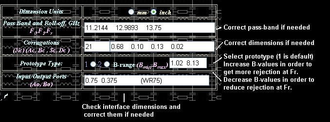
Figure 4: Key dimensions of corrugated structure to be specified in order to generate initial (draft) design.
Therefore click button [Generate Dimensions] and go to next design page by clicking button [Simulate Response] in order to simulate frequency response there (see Fig 5).
Figure 5: Control panel.
This is a stand-alone verification tool. If you have already obtained initial
dimensions in previous design page, those dimensions will be automatically transferred
to the simulator. You may correct them or replace them with other design, as
the program module is independent from other design steps. In order to simulate
filter performance click button [Simulate] (see Fig 6).
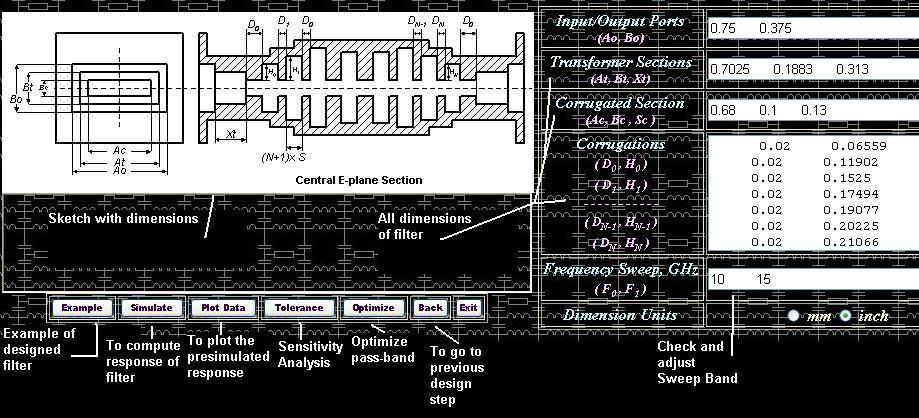
Figure 6: Appearance of interface of the Simulator.
The process of simulation can take not more than 1-2 seconds for Pentium 4 computer. For slower computers a warning note shown on Fig 7 can appear during simulation. The message means IE is unresponsive during computation, i.e. does not respond on other events like mouse clicking or resizing windows. The Simulator and some other design tools of my Design Studio are based on “client side” VBScripts, but scripts usually take full control over browser while running. The browser (Internet Explorer) is not designed as a computational tool, so its computational efficiency and operational memory are very low. Therefore it is recommended to cancel all other windows jobs and wait until computation completed and [Simulate] button is released. After simulation is completed and browser became responsive, you can see plot of simulated frequency response of filter by pressing the next button [Plot Data].
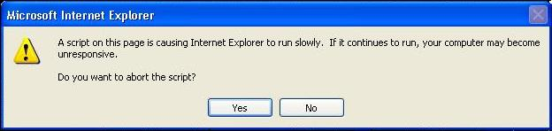
Figure 7: A warning note may appear. The note warns that during simulation time [if it is more than couple of seconds] Internet Explorer may become unresponsive [will not act other events like mouse clicking, windows switching, resizing, etc.]. Click [Yes], if you want cancel simulations. Click [No] if you want to continue simulation. If you run simulations, please do not try to execute other commands or events until all computations are completed.
If you press [Plot] button, you can see plot of reflection and transmission in dB vs. frequency. Please do not expect performance of initial design to be great. The picture below (see Fig 8) shows how it usually looks like.

Figure 8: Typical reflection and transmission performance of “draft” design.
Check position of bandwidth and cut-off (roll-off) in accordance with your
spec. If your spec do not contain requirements for lower (roll-off) rejection
(only harmonics), you have to specify the filter roll-off anyway as design
reference point because it effects bandwidth of spurious modes (see Fig 1). You
can correct bandwidth by repeating the second design step, i.e. slightly
changing Bmin and Bmax values of prototype and re-synthesizing the dimensions.
Simultaneously it is recommended to check rejection of higher frequency
spectrum (harmonics). If rejection is not adequate, more corrugations are
needed. Actually all initial parameters effect on potential performance of the
filter and there is no single recommendation how to design the best filter.
That is not like designing waveguide iris filter when filter bandwidth and
order are only parameters. This procedure is not unambiguously determined, i.e.
they might be different types of corrugated filters matching the same spec.
Therefore, you may try different initial parameters and subsequently compute
frequency response until you are satisfied with dimensions and rejection (not
pass-band) performance of the draft design.
No customer indeed will be happy with a harmonic filter having such an ugly pass-band performance shown on Fig 8. Therefore the design is not completed until the reflection ripples of the filter pass-band are not reasonably small. Therefore we need an optimizing tool in order to improve the performance of filter pass-band. Although pass-band performance of “draft” design is so low, it might need some slight adjustment of corrugations and transformer steps in order to make it much better. Optimizer is a tool, which runs various combinations of dimensions and computes the path of improvement (gradient) of a function of performance (functional). Therefore it is important to specify optimization goals and limits (constrains) effectively in order to achieve the best performance. Example of selection of optimization constrains is shown on Fig 9.
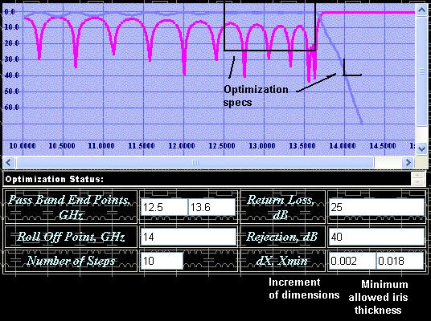
Figure 9: Selection of optimization constrains.
The optimization constrains have to be reasonable. For example, do not try to make filter wider than you really need or optimize rejection of harmonics. The optimizer is based on gradient method, which is good only for finding “local” minimums, i.e. slight improvement. While optimizer is running, the filter dimensions are changing. Over optimization may worsen other parameters of filter as length and rejection of higher frequencies. Therefore, periodically check transmission response over wide frequency sweep. The optimization increment dX is the change of any of dimensions (thickness of irises, depth of cavities, transformer length and width) during one step of optimization. Initially the value of dX may be selected as 0.002-0.004 times of the interface waveguide width. While the reflection ripple is reducing, the increment has to be reduced up to ten times (0.0002-0.0004 times interface width). Sometimes some of the dimensions (irises between corrugations) might tend to unrealistic and even negative values. Therefore you might need to specify the minimum thickness of irises, for example 0.018’’-0.022’’. While optimizing, the bandwidth of filter can move along the frequency axis. You can slightly move the bandwidth using appropriate button (see Fig 10). If the button [Adjust Band] is clicked, a window with input line will appear. Enter a value slightly less than 1 in order to reduce frequency plan and a value slightly greater than 1 in order to move the frequency plan forward the frequency axis (increase).

Figure 10: Control panel of the Response Optimizer.
The same precautions have to be taken into account while using the optimizing tool. The optimizer is based on the same type of VBScript code and is not responsive while running. Please read warning notes marked red and written above and below the Fig 7. Optimization process may require from 40 to 100 optimization steps and from 15 to 45 minutes for an experienced designer. At the end of optimization the pass-band frequency response of filter should be much better (see Fig 11).
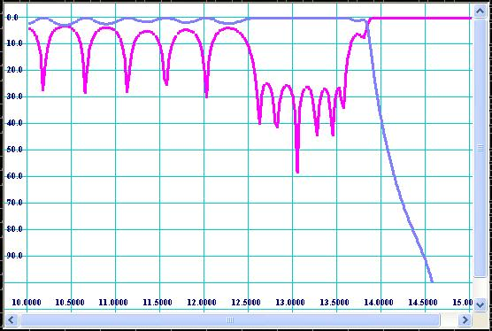
Figure 11: Frequency response of optimized filter.
Frequency response of “optimized” filters might not be so “esthetically beautiful” as Chebychev, Zolotarev and other polynomials look like, but it can be really “optimal” in respect to formal specs. For example, size, manufacturability, power handling and harmonics rejection are not involved into conventional synthesis methods, but they are the most valuable features of harmonic filters. The main advantage of optimization design methods over the direct synthesis ones is flexibility and trade offs.
Important Note: Remember to save the optimized dimensions by clicking [Save Design] button. If you do not, the results of optimization can be lost after you exit the Optimizer.
During and after optimization the filter has to be virtually tested over wide frequency sweep for spikes and zones of lack of rejection. The Fig 12 shows wide sweep frequency transmission response for the optimized design.

Figure 12: Response over wide frequency sweep.
It should be noticed that the response obtained by simulation over high frequency spectrum corresponds to TE10-mode transmission and reflection only. It is recommended to check the responses of spurious modes also. In order to do so, simply replace internal width of corrugations (see Fig 6) by Ac/2 value for TE20-mode, Ac/3 for TE30-mode, Ac/4 for TE40-mode, etc and compute frequency response. For our example, values 0.34 (0.68/2) and 0.2267 (0.68/3) are entered for modes of TE20 and TE30 respectively and plots shown on Fig 13 and Fig 14 are obtained.

Figure 13: Plot of TE20-mode frequency response.

Figure 14: Plot of TE30-mode frequency response.
As it is mentioned above, the plots correspond to the worst case of propagation of the spurious modes, if they are excited for 100%. Practically they might be hardly noticed (as showed on Fig 1) and be reason of mysterious and unsolvable “quality” problems further. Therefore is better to double check the spurious positions during design process by such a simple trick.
As it is practically impossible to produce hardware with dimensions identically equal to the dimensions assumed to be optimal (designed) because of inaccuracy of real production methods, it is at least useful to know what kind of performance the reality hardware would demonstrate. Different production methods such as EDM, milling, casting, galvanic forming, water jets, and others have their characteristic tolerances. In conformity with corrugated filters the most popular production methods can be specified by rounding of straight corners and deviation of positions of vertexes of cavities. The both effects may be evaluated by Sensitivity Analyzer linked to the Simulator by [Tolerance] button. Four types of manufacturing tolerances are specified there. “Random” tolerances are random manufacturing errors applied to all vertex positions of waveguide junctions. Naturally the random errors are supposed to have Gausian distribution of probability density over increment. Nevertheless here linear distribution is used because of having practical sense. For example, in accordance with probability theory and life experience any great error can occur, but if the error succeeds the specification, production people consider it as a defect. As they are “random” tolerances they can appear in great number of combinations. Therefore the filter structure must be tested over at least several combinations of tolerances, which can be simple done by pressing [Apply Tolerances] button several times. In many cases design engineers are interested in effect of [Worst Case] combinations. Worst case means the tolerances distributed over filter structure in combination giving the worst impact on performance of the filter. Practically probability of such combinations is negligibly low, but it is also considered by conservative product engineers. H-plane milling tool radius is radius of milling cutter applied to corrugation on H-plane, i.e. if the filter is composed from two half bodies to be connected on central H-plane by flanges. H-plane assembling is easier to produce by milling, but it is less reliable than E-plane assembling because potential flange contact problems. Although E-plane assembling has a big advantage such as insensitivity for flange contact quality, it is seldom used because it is larger than H-plane one, more sensitive for cavity rounding and it requires deeper penetration of cutter (larger cutter is required). EDM is very accurate, so tolerances and radii are negligible small. However it is expensive and therefore production people do not like to use it for mass production. Galvanic forming has advantage over “machine” methods, as it can build filter as monolithic unit with no contact flanges. However galvanic methods are less accurate and have environmental problems. It is direct responsibility of design engineer to provide sensitivity analysis over possible production methods in order to eliminate potential quality assurance problems. For example the frequency response shown on Fig 11 may degrade to the response shown on Fig 15, if reasonable production errors are applied (radius of milling tool is 0.064’’ and random tolerances are +/- 0.0005’’). Nevertheless, the “example” filter (press [Example] option of Simulator) shows much less degradation of frequency response caused by the same production tolerances.

Figure 15: Degradation of frequency response shown on Fig 11 caused by milling tolerances.
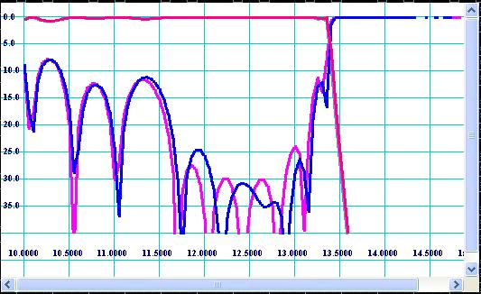
Figure 16: Degradation of frequency response of “example” filter caused by same milling tolerances.
Nevertheless in accordance with sensitivity analysis the bad filter may be produced using EDM method because EDM tolerances impact is more or less acceptable (see Fig 17).
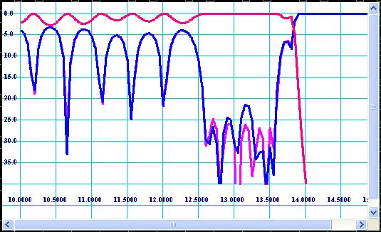
Figure 17: Degradation of frequency response shown on Fig 11 caused by EDM tolerances.
The analysis shows that the “example” filter is stable for production errors and can be produced by “cheap” production methods. The other filter should be produced by only accurate production methods and might be expensive. Stability for production tolerances depends on many design factors such as equivalent values and distribution of discontinuities along the filter structure. Usually filters having wider design pass-band are more stable. I have found some types of corrugated structures, for example quarter-wave-coupled, being also more forgiving the production errors.
There is very strong and very wrong believe among engineers that “accurate EM based” software, for example HFSS, is more accurate because licenses are expensive. Contradictory, they think my Design Studio must be very inaccurate only because it is a free online toy. I can claim that my Design Studio is more accurate and hundreds of times faster than, for example, HFSS because it is based on analytically pre-solved problems of scattering and propagation in real (non-discrete) space. Practically the software accuracy is more sophisticated. None of existing EM simulation tools can be called as “accurate” because no exact solutions of corresponding Maxwell equations within appropriate “practical” boundary conditions have been found. All numerical methods ever been developed are approximate. The accuracy problem is based on convergence problem, which is based on idea that “for any ε >0 there always exist N, so for any n>N |An-A| < ε”. None of existing EM numerical methods is approved over the convergence criterion by mathematicians. Therefore “to converge or not to converge” is still the question. So no trust to any simulation results should be given. Some of simulation tools providers can argue this my point of view, but I am quite sure no one would take my engineering responsibility for failure of “well pre-simulated” designs. Therefore, I cannot also guarantee my Design Studio is an “exact” design tool. However, I assume my Simulator provides “practical” accuracy, i.e. slight shift of bandwidth and return loss deviation for “design stable for errors” (see rubric above) in respect to “reality”. Stability for errors is something associated with design itself rather than software. As computational errors make similar effects for filter simulation results as production errors, the designs stable for tolerances should be more “simulatable”. The effect of computational errors of my Design Studio are expected to be systematic, because computational algorithm is based on “smooth” variational approximations, i.e. they visually look like slight proportional change of all dimensions. However computational errors of HFSS and other FEM (finite elements method) based software is rather random than systematic, because the vertex points of boundary “elements” (mesh) may intersect the corrugations in different unpredictable ways. Therefore the simulation performed by the Design Studio may be shifted in respect to the reality, but it still should be a picture of the reality. Such errors can be predicted and scaled. However accuracy of HFSS depends on status of convergence, how many passes are used and how the frequency reference point is high. For some cases, such as long filters, adequate accuracy even cannot be achieved because of computer memory and speed limitations. If convergence has not occurred, the return loss picture of HFSS simulation can be much worse than even measured (see Fig 18).
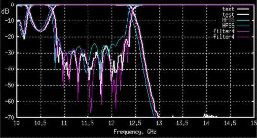
Figure 18: Correlation between measured data and data simulated by HFSS and filter4 (FORTRAN prototype of Design Studio) for a long harmonic filter.
For short filters and great number of passes HFSS can give slight better similarity with the reality (See Fig 19) and always has to be used as final design verification tool. Nevertheless, designing harmonic filters I would recommend always relying on final HFSS simulation. It is a good idea, because if your design fails, you always can blame HP, Ansoft or Agilent (whoever is the license provider), but blaming my Design Studio nobody of managers would take seriously.
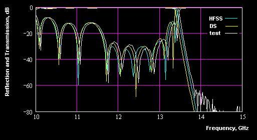
Figure 19: Frequency response measured and simulated by HFSS and Design Studio for a short harmonic filter breadboard.
Remember simulating response by HFSS the model must to be split in two XZ (electric wall) and YZ planes (magnetic wall) in order to increase accuracy. If the both, HFSS and Design Studio, show similar simulation results, it can be trust for the real hardware will show something similar. For many cases the both simulations can show quite different performance (see Fig 20).
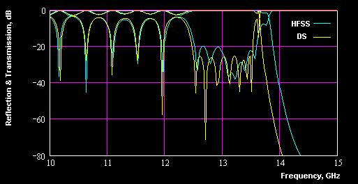
Figure 20: Frequency response simulated by HFSS and Design Studio
If the both simulations so different, it does not matter which of those responses simulated more accurately. It means the design is not stable for errors and if it is built it will rather demonstrate even worse performance (see Fig 15). So it is recommended to go back to the base assumptions of your design and rework it until the sensitivity analysis shows reasonable sensitivity for errors.
Input/Output and Data Management
All pages of Corrugated Filter Design Workshop are based on simple HTML linked by VBScript subroutines. All design data stored in the top frame and transferred from one page to another. Being a regular web page, the design workshop does not have any file protection system. Therefore several important rules must be held in order to save your design from being lost. Those rules are;
- While working on design do not leave the Workshop for other web pages. Your design data will be lost if you exit the top frame.
- Always save your design data, if it cannot be easily reproduced. In order to save your design, go to File page and follow instruction written on the bottom of the page.
- Keep intermediate data in an independent text editor, for example NotePad. All design data can be booked from the File page.
- Do not leave Optimizer, until you have completed optimization. If you do not want to lose the optimized design data and would like to save it click [Save Design] button on control panel of the Optimizer. Saving the optimized data means saving it into internal buffer as new design, but not saving it from being lost.
- The Internet Explorer is unresponsive while performing optimization or simulation. Do not click other links or buttons until the results are obtained. Do not switch to other programs during simulation or optimization processes.
- It is recommended exit other programs before running optimization.
Design data obtained inside the Design Workshop can be transferred into HFSS or AutoCAD. In order to transfer your design into HFSS, go to the File page, create HFSS macro, copy it to the computer clipboard, paste it to a text editor (NotePad), save it on disc as *.mac file, FTP it (if needed) and load it by HFSS through Draw/File/Macro/Execute option. In order to transfer your design into AutoCAD, go to the File page, create AutoCAD script, copy it to the computer clipboard, paste it to a text editor (NotePad), save it on disc as *.scr file, and execute it by Tools/Run Script option. Before executing AutoCAD script, turn off snap and adjust drawing settings in accordance with scale and units. The Corrugated Filter Design Workshop generates 3D script, so set up appropriate [vpoint] parameter in order to see the structure in 3D appearance. If you need to create drawings, you can project the 3D model on appropriate sections or planes and set dimensions.
TO BE CONTINUED